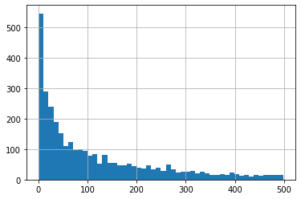
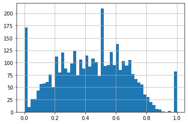
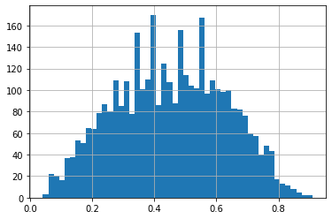

这里就使用实际的数据, 利用用户画像来进行召回, 做一个简单的展示.
数据准备
这里使用的数据, 仍然是经典的movielens的MovieLens 1M Dataset.
其中包含约100万的用户对电影的打分记录, 由约6000用户对约4000电影打分而得到.
包含3份数据, 一份是打分文件”rating.dat”, 格式为用户ID::电影ID::打分::时间戳, 并且:
- 用户ID在1到6040之间.
- 电影ID在1到3952之间.
- 打分有5个等级.
- 每个用户至少有20条打分记录.
一份是用户文件”user.dat”, 格式为用户ID::性别::年龄::职业::邮编.
还有一份电影文件”movies.dat”, 格式为电影ID::电影名称::风格流派.
为了模拟曝光后是否点击这一行为, 统计每一个用户的平均打分, 将评分在其平均分以下的电影, 设置为0, 即曝光而未点击; 评分在其平均分以上的电影, 设置为1, 即曝光后点击.
1 | # 读取数据 |
| user_id | item_id | score | time | |
|---|---|---|---|---|
| 0 | 1 | 1193 | 5 | 978300760 |
| 1 | 1 | 661 | 3 | 978302109 |
| 2 | 1 | 914 | 3 | 978301968 |
| 3 | 1 | 3408 | 4 | 978300275 |
| 4 | 1 | 2355 | 5 | 978824291 |
1 | # 统计每个用户平均分 |
| avg_score | |
|---|---|
| user_id | |
| 1 | 4.188679 |
| 10 | 4.114713 |
| 100 | 3.026316 |
| 1000 | 4.130952 |
| 1001 | 3.652520 |
1 | # 将每个用户平均分以上的电影, 设置为曝光后点击 |
| user_id | item_id | score | time | avg_score | label | |
|---|---|---|---|---|---|---|
| 0 | 1 | 1193 | 5 | 978300760 | 4.188679 | 1 |
| 1 | 1 | 661 | 3 | 978302109 | 4.188679 | 0 |
| 2 | 1 | 914 | 3 | 978301968 | 4.188679 | 0 |
| 3 | 1 | 3408 | 4 | 978300275 | 4.188679 | 0 |
| 4 | 1 | 2355 | 5 | 978824291 | 4.188679 | 1 |
1 | # 按时间分为训练集和测试集 |
1 | # 将测试集中新出现的用户与电影过滤掉 |
1 | (135148, 6) |
物品画像构建
这里由于电影本身包含有分类标签, 且没有更多信息, 简单起见, 就直接使用数据给出的标签作为物品画像.
然后结合电影的曝光点击记录, 以及贝叶斯平滑计算电影的分值, 并按标签制作倒排表.
1 | # 计算每个电影的点击率, 曝光/点击次数 |
1 | # 查看曝光次数分布 |

1 | # 查看点击率分布 |

从图上可以看到, 有一些曝光次数比较少的电影, 其点击率会比较极端地倾向于0或者1.
1 | # 贝叶斯平滑, 挑选出记录大于50条的电影的点击率, 用来估计贝塔分布参数 |
1 | 0.474422332230172 0.1960938288262356 |
1 | # 计算每个电影经过贝叶斯平滑后的点击率 |

1 | df_train = pd.merge(left=df_train, right=item_ctr, on='item_id', how='left') |
| user_id | item_id | bayes_ctr | |
|---|---|---|---|
| 0 | 1980 | 2883 | 0.523378 |
| 1 | 4593 | 924 | 0.715299 |
| 2 | 2841 | 3863 | 0.414818 |
| 3 | 2841 | 3456 | 0.665445 |
| 4 | 2841 | 3298 | 0.451444 |
1 | # 添加电影信息 |
| item_id | title | category | category_list | |||
|---|---|---|---|---|---|---|
| 0 | 1 | Toy Story (1995) | Animation\ | Children’s\ | Comedy | [Animation, Children’s, Comedy] |
| 1 | 2 | Jumanji (1995) | Adventure\ | Children’s\ | Fantasy | [Adventure, Children’s, Fantasy] |
| 2 | 3 | Grumpier Old Men (1995) | Comedy\ | Romance | [Comedy, Romance] | |
| 3 | 4 | Waiting to Exhale (1995) | Comedy\ | Drama | [Comedy, Drama] | |
| 4 | 5 | Father of the Bride Part II (1995) | Comedy | [Comedy] |
1 | # 制作倒排表 |
1 | tag_item_dict |
1 | {'Comedy': [('745', 0.8938807903284889), |
用户画像构建
接下来构建用户画像, 这里做法比较简单, 主要通过用户与电影的交互, 以及电影本身的物品画像, 来构建用户画像.
在计算用户画像的偏好分值时, 考虑两部分, 一部分是基准值, 即某个标签整体的点击率, 一部分是用户的累计值, 使用如下形式进行计算:
这里的$\alpha$是拍脑袋决定的, 考虑到整体用户量约6000, 因此取$\alpha=1/5000$.
1 | # 遍历数据进行统计, 包括各标签整体的曝光/点击, 以及每个用户的曝光点击 |
1 | # 计算每个用户各个标签的分值, 并排序 |
1 | user_portrait |
1 | {'1980': [('Documentary', 0.91404251131667), |
用户画像召回
现在有了物品画像, 也有了用户画像, 现在利用它们来进行召回.
这里使用比较简单的方法, 即对用户各标签分值进行归一化处理, 计算得到每个标签下选取物品的数量, 最后选取头部的物品作为返回.
比如每个用户召回100个物品, 用户某个标签归一化后, 分值为$0.2$, 那么就去对应标签下选中头部20个物品.
这里可能更好的做法, 是将倒排表中物品分值等价于选中概率, 即分值越大, 有更大的可能被选中.
1 | # 标签分值归一化 |
1 | {'Documentary': 0.08392623657346782, |
1 | # 对每个用户统计已经曝光过的电影 |
1 | {'1006', |
1 | # 对每个用户召回200部电影, 排除已曝光的 |
1 | # 在测试集上检验评估指标, 查准率, 查全率, F1 |
1 | 查准率: 0.0845 |
小结
以上, 通过实际的数据与代码, 实现了用户画像与物品画像的构建, 然后使用它们来进行召回.
上面的做法是比较简单的, 如果考虑到推荐的精准性, 可以对用户标签分值设计更加复杂的计算方法, 如果考虑推荐的多样性, 可以在对每个标签下物品进行选取时, 按概率进行选取, 而不是简单地只选取靠前的物品.